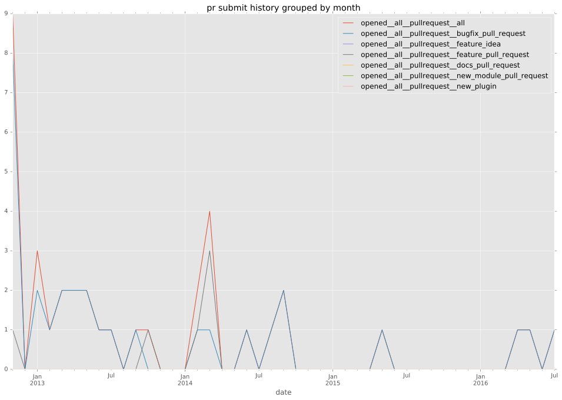
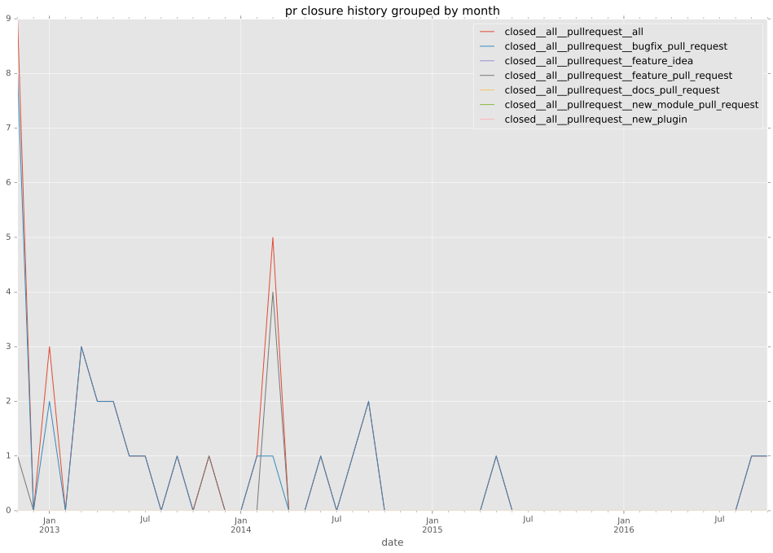

authors
- brontitall
maintainers
- brontitall
contributors
- brontitall : 24 commits
- sfromm : 5 commits
- dago : 4 commits
- Jmainguy : 22 commits
- jpmens : 5 commits
- dermute : 1 commits
- kcghost : 3 commits
- jctanner : 2 commits
- dagwieers : 1 commits
- mavimo : 1 commits
- gregdek : 1 commits
- jimi-c : 5 commits
total issue counts
unknown: 1
feature pull request: 6
pullrequest: 38
bugfix pull request: 31
issue: 5
bug report: 5
issue history
pullrequest history


days open by issue type
bugfix pull request
count: 40
std: 39.6142942344
min: 0
max: 154
median: 0.0
mean: 12.2
all
count: 53
std: 35.0907490321
min: 0
max: 154
median: 0.0
mean: 11.7169811321
pullrequest
count: 0
std: nan
min: nan
max: nan
median: nan
mean: nan
feature pull request
count: 9
std: 17.6902358504
min: 0
max: 40
median: 3.0
mean: 13.2222222222
issue
count: 0
std: nan
min: nan
max: nan
median: nan
mean: nan
bug report
count: 3
std: 2.88675134595
min: 1
max: 6
median: 6.0
mean: 4.33333333333
closures grouped by total days open